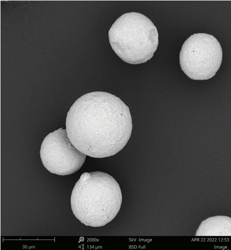
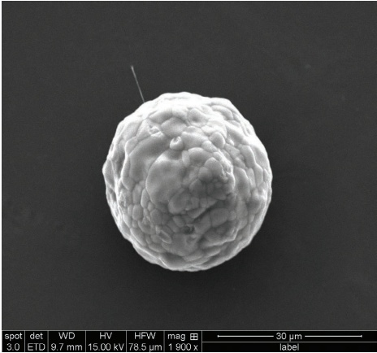
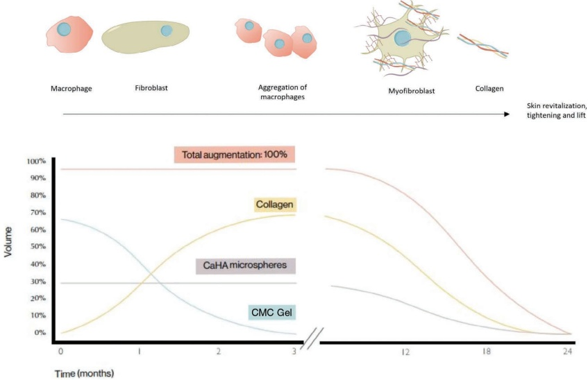
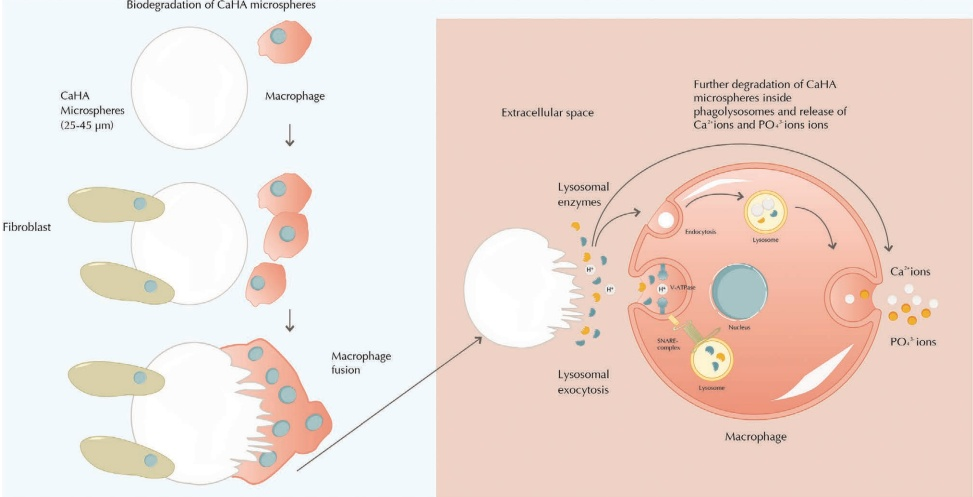
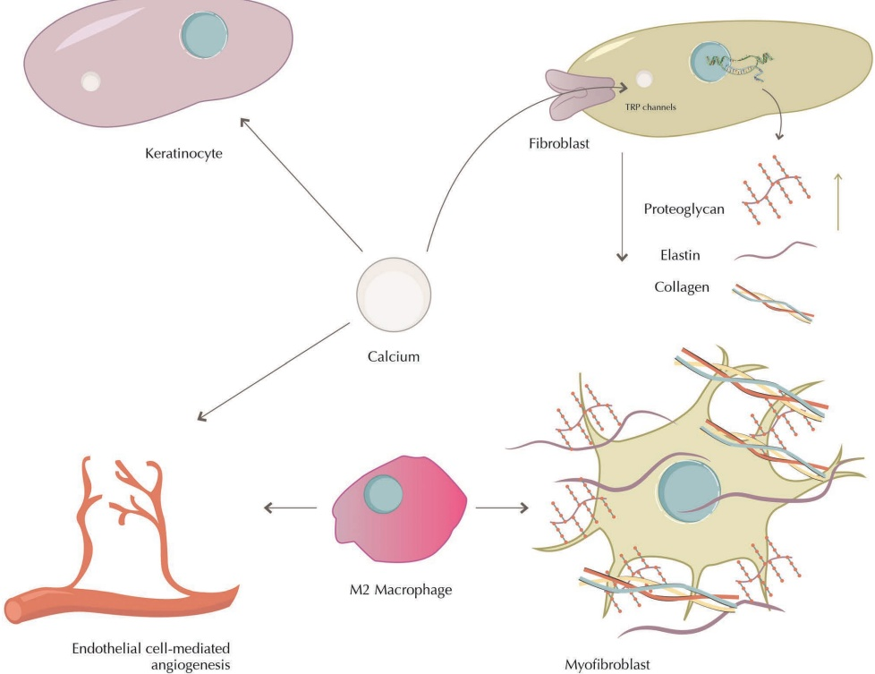
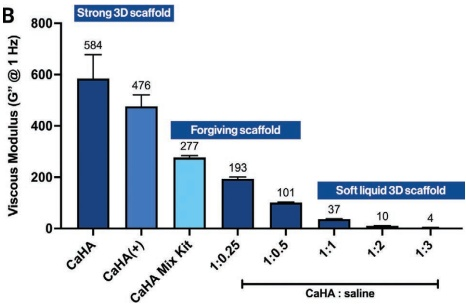
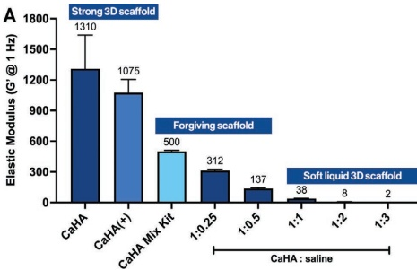
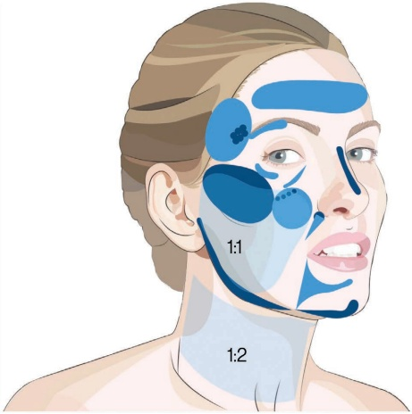

1 羟基磷灰石钙：Radiesse及其他CaHA产品：羟基磷灰石钙的故事
羟基磷灰石钙
Radiesse及其他CaHA产品：羟基磷灰石钙的故事
KATE GOLDIE, NIAMH CORDUFF, ALEC D. MCARTHY,
JANI VAN LOGHEM, WOUTER J. PEETERS, AND PHILIPPE SNOZZI
1.1 CaHA的历史
羟基磷灰石钙（CaHA）是一种天然存在于石头以及包括人类在内的动物骨骼和牙齿中的矿物质。CaHA主要由钙和磷酸盐组成，是Radiesse的活性成分，这是一种软组织填充剂，本书将对此进行深入讨论。最初，CaHA具有多种其他再生治疗适应症，包括牙科、骨科、耳鼻喉科手术。在获得欧洲药品管理局（EMA）和美国食品药品监督管理局（FDA）严格的安全性和有效性评估后，它获得了用于美容应用的批准 [1]。CaHA在新兴的再生美容领域的应用——这是再生医学的一个独立分支——旨在通过生物力学和生物刺激效应来恢复组织结构，从而改善主要受衰老过程影响组织的美容外观。
在20世纪90年代初，一种 marketed 为Coaptite（由Bristol-Myers Squibb开发）的CaHA产品曾用于治疗尿失禁。1999年，该技术被美国BioForm Medical收购，并将应用范围扩展到面部治疗。到2001年，首批患者接受了这种临时性治疗。随后，2003年，FDA批准了一种 marketed 为Radiance的产品，该产品后来更名为Radiesse。2004年，Radiesse首次获得EMA作为美容医疗器械的批准。2006年，它获得了用于整形和重建手术的CE标志，可用于面部深层真皮和真皮下软组织增补。同年，FDA批准了Radiesse用于治疗中度至重度的皱纹和褶皱，例如鼻唇沟。此外，它还获批用于改善或/和矫正艾滋病病毒（HIV）感染患者的脂肪萎缩 [2]。2009年，BioForm Medical被德国制药公司Merz Pharma收购，后者在全球多个市场重新推出了Radiesse，导致销量显著激增。2015年，FDA将Radiesse的批准范围扩大到非面部适应症，例如手部增补。Radiesse的专利配方带来了十年的垄断期。自2003年首次引入以来，直到2016年才对Radiesse配方进行了更改，当时推出了含利多卡因版本的Radiesse+进入美国市场并进一步推向全球。2018年，至少有其他两家制造商开始根据Radiesse的规格生产CaHA产品。2021年，Radiesse(+)作为唯一专门设计用于改善中度至重度下颌轮廓缺陷的可注射产品上市。此外，2024年，Merz Aesthetics获得了欧盟批准，可使用高倍稀释的Radiesse治疗颈部中度至重度的皱纹。
由于迄今为止进行的大部分研究和经验都集中在Radiesse上，本书讨论的技术和研究均涉及使用该特定产品。然而，需要指出的是，当采用本书描述的各种技术时，也可以利用具有相似特性的其他CaHA产品。
1.2 背景知识
Radiesse是一种基于CaHA的填充产品，用于体积增补适应症，通过真皮下、皮下或骨膜上注射给药，并具有通过[2]增强皮肤质量的额外益处。钙是一种存在于指甲、牙齿和骨骼中的矿物质（中等体型成年人平均约1公斤），也存在于皮肤和软组织中（约10克）。此外，钙在细胞分化、基因转录调控、肌肉收缩和细胞粘附等许多代谢和生理过程中起着至关重要的作用。特别是，CaHA-CMC由于与人体内源性羟基磷灰石的相似性（CaHA化学式 Ca10(PO4)6(OH)2），具有良好的生物相容性；因此，注射前无需进行过敏测试 [3]。
Radiesse由两种主要成分组成：CaHA微球和凝胶载体，其体积比例分别为30%和70%。CaHA微球主要亲水性，有助于水分保持。CMC凝胶载体由生理盐水、甘油和羧甲基纤维素钠组成。
2 羟基磷灰石钙（CaHA）软组织填充剂
(CMC)。CMC是一种水溶性阴离子纤维素衍生物，具有剪切稀化特性，允许通过小口径锐针和钝性套管针进行注射，在去除剪切应力后能保持微球的形状并通过非共价交联形成自组装 [4]。CMC缺乏化学交联剂使其易于分散，混合或稀释时不易结块，从而降低了注射后肿胀的风险，这使得Radiesse成为高倍稀释的理想选择 [5]。CMC的高粘度和假塑性特性确保了其在载体中平滑施用和微球均匀分散，使CaHA-CMC凝胶成为美学治疗中可靠、有效且耐受性良好的选择。CMC已被FDA认定为安全，因其药物结合能力、pH敏感性和高效递送活性成分的能力，更适用于制药应用。因此，CMC不仅延长了货架期，还充当了保湿剂，解释了CaHA常伴随的注射后水肿 [6]。
CMC与其他纤维素材料一样，也被认为无毒、无过敏性、具有生物相容性和可生物降解性 [7,8]。抗菌聚合物的另一个有趣的特性是它们能够通过产生干扰细菌细胞膜的静电相互作用来模拟两亲宿主防御肽 [9,10]。该特性也在CMC中得到了研究，结论是这种生物聚合物具有较低的生物膜形成能力 [4,8,11]，最有可能减少填充剂相关的感染。
1.3 CaHA生物刺激和组织再生的科学原理
注射并充分混合后，Radiesse将CMC凝胶和CaHA微球结合，实现即时的1:1修正。CMC凝胶易于解离，可避免堵塞，从而减少注射后的肿胀 [12]。大约三个月后，CMC凝胶将被吸收，同时，CaHA颗粒会吸引并刺激成纤维细胞产生胶原纤维。CMC凝胶提供即时效果，而CaHA微球则充当支架诱导胶原形成，从而提供长期效果（图 1.1–1.2）。CaHA微球的尺寸范围为25–45 μm，具有直径为2–5 μm的微孔，设计上呈球形且光滑，目的是最小化注射过程中的皮肤创伤并降低发生肉芽肿形成等严重不良事件的发生率 [13,14]。此外，较大的微球尺寸可以防止巨噬细胞吞噬作用，因为巨噬细胞无法吞噬大于10 μm的颗粒 [15]。各种研究调查了CaHA颗粒的降解过程，观察结果不尽相同。这些微球的溶解可能通过多种机制发生。在降解和吸收过程完成时，释放出的钙离子和磷酸根离子与体内天然存在的离子相同，会通过代谢途径被处理并自然清除 [16]。因此，CaHA是一种不可永久性的、可完全吸收的填充剂。
1.3.1 CaHA-CMC的生物降解
Radiesse生物材料与其免疫系统界面之间的相互作用是复杂的，并非...


但尚未完全阐明。由于羟基磷灰石钙（CaHA）–CMC微球大于10 μm，单个巨噬细胞无法吞噬这些颗粒，而是通过巨噬细胞融合形成多核巨细胞（MNGCs）的方式使其降解。生物材料的相互作用会导致不同类型的MNGCs，其中一些会导致异物反应和纤维化，而另一些则会产生更具再生性的反应，这受多种因素驱动，超出了本章的范围 [17]。研究表明，CaHA微球无论是否涉及MNGCs（包括异物巨细胞，FBGCs）都会发生降解 [18–23] [14,16]。例如，组织样本的组织学分析观察到明显的异物反应，其中巨细胞包绕着CaHA颗粒。此外，对25名患者的分析显示，在接受了CaHA填充剂治疗后，巨细胞内一致出现紫罗兰色至灰色或米色的球体。这些球体周围还环绕着淋巴细胞 [19–22]。与可注射丝蛋白颗粒进行的比较研究也在啮齿动物模型中观察到了类似的免疫反应 [24]。Kim 证明了巨噬细胞最初不会吞噬CaHA颗粒。然而，随着时间的推移，这些微球逐渐被MNGCs降解和吸收。这一吸收过程通常持续约九个月，并且不会导致肉芽肿或慢性炎症的形成（图1.3）[20]。MNGCs的胞质内含有许多酸性液泡，它们利用溶酶体型H+-ATPase (V-ATPase) 质子泵将这些区域酸化，从而溶解羟基磷灰石涂层 [25]。因此，分解软组织填充剂如CaHA微球可能涉及一个类似的过程，尽管直接证据尚缺乏。
有趣的是，其他电子显微镜研究观察到注射CaHA填充剂后没有FBGCs或吞噬作用。相反，它们显示出与微球相邻的大而扁平的细胞。这些被认为是源自单核细胞并释放含有水解酶的囊泡进入胞质，从而将微球降解成微颗粒，最终分解为钙和磷离子 [14,26]。产生的可溶性 Ca2+ 离子随后通过扩散或主动转运的方式离开细胞进入周围介质。局部 Ca2+ 浓度的升高直接通过特定的钙通道，如瞬时受体电位（TRP）通道影响成纤维细胞（图1.4）。
1.3.2 组织再生机制
再生美容旨在通过再生构成细胞外基质（ECM）生态系统组成元素的多个部分来更新衰老组织的结构和功能。这与体积丢失的纤维化替代是不同的。Radiesse 是一种设计用于复制ECM中发现的生物物理信号和机械线索的三维支架 [27,28]。它提供了鼓励成纤维细胞生长和增殖的物理和生化线索。组织学研究已证明Radiesse具有诱导I型和III型胶原蛋白生成的能力 [29]，以及有组织的血管周围弹性蛋白。


蛋白聚糖 [30] 和糖胺聚糖 [31,32]，均为细胞外基质（ECM）的组成部分，以及改善真皮厚度和皮肤柔韧性的功能。除了刺激成纤维细胞合成新的胶原和弹性蛋白的功能刺激外，CaHA 还作用于成纤维细胞的结构方面。人类皱纹成纤维细胞与正常成纤维细胞相比具有不同的功能行为，其收缩力显著较低。当 CaHA 与成纤维细胞直接接触时，可将衰老性皱纹成纤维细胞的收缩力提高到几乎等同于正常皮肤成纤维细胞的水平（图 1.5）[33]。
成人组织中的成纤维细胞通常处于静止状态，但在受到刺激后会转变为活性的肌成纤维细胞并分泌 ECM 蛋白以帮助组织重塑。成纤维细胞的上调最初是通过机械转导通路进行的，这既可以通过松弛的 ECM 纤维拉伸进行间接诱导，也可以通过成纤维细胞利用整合素（integrins）附着和铺展到微球体上直接诱导 [34,35]。CaHA 微球体的最佳间距对于激活成纤维细胞和启动胶原生成至关重要 [5]。生化刺激在成纤维细胞活性中也起着关键作用，涉及细胞内钙水平的变化。钙通过 TRP 通道进入细胞，特别是瞬时受体电位香草果苷 4（TRPV4）通道，增加细胞内钙并激活对 ECM 合成至关重要的通路（图 1.5）[36]。这些细胞因子促进成纤维细胞迁移到钙浓度较高的区域，导致其转化为肌成纤维细胞。这些肌成纤维细胞通过同步的钙振荡积极参与 ECM 重塑和细胞收缩 [37–39]。
钙还对胶原生成具有间接作用，涉及减缓其降解的酶促作用 [40]。胶原是年轻皮肤的重要组成部分，它被胶原酶 I 通过溶菌（lysis）的方式降解。它由表皮最深层的基底层角质形成细胞合成。在皮肤衰老过程中，角质形成细胞的增殖和更新减慢，导致表皮变薄。生理性钙梯度调节着角质形成细胞的更新和分化 [38,39]。一旦分化，角质形成细胞从基底层迁移到皮肤的上层，该区域的钙环境更集中。这一分化和迁移过程降低了胶原酶 1 的合成和分泌（图 1.5）[41]。注射 CaHA 后，表皮中钙浓度的增加刺激了角质形成细胞的分化 [39]，在钙存在的情况下，角质形成细胞的转化周期加速，从而使角质层更新更快，这解释了临床上观察到的 CaHA 注射后光泽度和肤色的改善。

综上所述，血浆蛋白的初始吸附和血栓的形成会产生吸引巨噬细胞到该区域的信号分子。CaHA的生物材料特性（形状、表面形貌、润湿性、化学性质、电荷、可塑性）以及后续的信号分子决定了巨噬细胞向M2表型（促修复）极化，而非预先决定炎症通路的M1表型。通过倾向于M2极化，并结合来自其他驻留组织细胞群——例如干细胞——的信号，启动了一个促再生性组织通路。这些过程得益于微球降解过程中形成的富钙环境，达到一个作为诱导成纤维细胞活性的生物学信号（包括M2极化和后续组织再生）的Ca2+阈值（图 1.5）。因此，我们推测，再生过程是由成纤维细胞的机械刺激启动，并通过由钙释放介导的生化信号通路维持。
1.3.3 血管生成和新生血管形成
在皮肤再生的背景下，血管生成起着关键作用。研究表明，随着衰老过程的进行，皮肤组织的血管生成能力和血管密度都会下降 [20]。钙作为一种信号分子，在调节血管生成通路中发挥着至关重要的作用，特别是通过利用VEGF信号的M2巨噬细胞的活性 [41–44]。尽管确切机制部分仍待阐明
羟基磷灰石钙（CaHA）软组织填充剂
有证据表明 CaHA 可以通过增加巨噬细胞中的 VEGF 产生来刺激血管生成，进而激活内皮细胞。支持这一点的研究发现，当内皮细胞暴露于含有 CaHA 的巨噬细胞处理的培养基时，其迁移、增殖和血管形成能力均增加 [45]。其他研究记录到 CaHA-CMC 注射后血管密度、直径、毛细血管数量增加，并且 CD34 染色呈阳性 [46]。这些发现得到了随机对照试验的证实，该试验显示与透明质酸填充剂相比，使用 CaHA-CMC 填充剂在注射后四个月和九个月时具有显著更高的血管生成水平 [31]。这些结果表明，CaHA 治疗通过钙调控和巨噬细胞介导的 VEGF 通路增强了血管生成（图 1.5）。因此，钙在促进 Radiesse 注射后观察到的长期皮肤质量改善中起着主要作用（图 1.5）。
1.3.4 CMC 凝胶和 CaHA 微球的吸收
可证明的增容持续时间通常认为在 10–12 个月范围内 [14,47]，而其他医生有照片证据显示持续矫正可达 24 个月 [48]，甚至通过磁共振成像检查到 2.5 年 [49]。
1.3.5 流变学性质
由于市面上有不同的 CaHA 产品，无法对含 CaHA 的注射剂的总体流变学性质做出单一论断。Radiesse CaHA 的主要流变学特征是高弹性（G′）和粘度（η*），这赋予了其在注射部位即刻的填充效果。与其它真皮填充剂相比，Radiesse 具有最高的粘度之一，这意味着它停留在注射部位，不会扩散到周围组织（图 1.6）。它还具有高弹性——指凝胶在受到压力后恢复到初始形状的能力——这使其比许多其他真皮填充剂具有更强的提升能力（图 1.7），使 CaHA 在美容医生的工具箱中成为一种非常多功能的制剂 [12,50]。这些物理性质使得该产品无需稀释即可经济使用，因为提供与市场上粘度和弹性较低的竞争性 HA 产品相同的美容效果所需的材料更少。使用利多卡因和/或生理盐水进行稀释时，CaHA 的粘弹性可以降低（图 1.8）。
1.4 CaHA 的安全性概况
根据对文献发表综述的结果，CaHA 总体具有良好的安全性。然而，皮肤变色、水肿、感染、结节形成和血管受损是最常见的不良事件 [51]。目前存在多种管理 CaHA 合并发症的治疗方法，这些将在第 42 章中进一步讨论。
1.4.1 肉芽肿形成
已对 CaHA 的安全性及耐受性进行了广泛研究。仅使用 CaHA 产品治疗的患者中记录到的肉芽肿非常少。相比之下，交联透明质酸（HA）产品具有更高的肉芽肿形成率。Sanchez 等人显示，填充剂中的碎片化 HA 纤维可能会向免疫系统发出组织损伤的信号。换句话说，当 HA 填充剂纤维（低分子量）游离时，身体将其视为降解的组织 [52]。CaHA 球体的表面光滑，因此肉芽肿形成的几率小于其表面不规则或尖锐的情况。虽然有报道称 CaHA 注射后发生过肉芽肿形成，但正如 Lemperle 等人观察到的，Radiesse 在所有填充物质中似乎引起了最低的肉芽肿形成率 [14]。
1.4.2 骨形成
无孔陶瓷 CaHA 和大孔 CaHA（具有从 10–500 μm 的高度有序的孔隙结构）允许骨整合。



大孔隙的 CaHA 易于促进成纤维血管的内生生长，而非陶瓷 CaHA 骨水泥已广泛用于重建手术修复骨缺损，并逐渐被新骨吸收 [29,53]。在 Radiesse 中，CaHA 微球是微孔隙的，其颗粒具有仅 2–5 μm 的孔径，过小无法促进成纤维血管内生生长和骨形成。重要的是，迄今为止尚无文献报道皮下注射 Radiesse 引起皮下组织骨形成的病例。关于沿骨膜注射时刺激更持久的丰容和骨形成的可能性仍然是推测性的，因为没有文章明确证明了这种潜力。事实上，研究人员已表明，诱导骨形成必须将 CaHA 置于骨膜下，尽管骨膜置入不能产生骨 [54,55]。
正常情况下，成骨细胞是产生骨基质所必需的，因此将 CaHA 产品注射到软组织中不会导致骨形成。此外，一项研究表明，间充质干细胞可以被双相 CaHA 产品（BCPs）刺激，具体取决于其物理特征和化学成分 [56]。这些产品调节干细胞的行为，来自不同来源的干细胞在基因表达谱上本质上是不同的，并且可以通过 BCPs 被诱导向骨软骨分化。本研究使用了专门设计用于成骨的 CaHA 产品，该产品具有产生骨基质所需的特定表面特征和孔隙。软组织填充剂产品颗粒光滑，不含孔隙，在任何研究中均未与骨基质的形成相关联。
骨无法形成，因为 CaHA 不是骨；它是骨骼和牙齿中发现的一种矿物质成分。真皮或皮下组织中不含有成骨祖细胞或骨形态发生蛋白。此外，软组织中存在的微动性会阻止成骨作用。大量描述 CaHA 在各种软组织应用中使用情况的文献均未描述成骨现象 [14]。
1.4.3 放射学可见度
Carruthers 等人检查了注射后的平片X光和计算机断层扫描（CT）图像。他们发现，在 13% 至 56% 的病例中，平片X光上可见轻微的模糊外观。然而，在 CT 扫描中，96.7% 至 100% 的病例中清晰可见更明确的白色混浊 [57]。Tzikas 显示了产品在注射面部后七个月的 CT 扫描残留 [47]，而 Pavicic 等人在一项 MRI 研究中显示 CaHA 在 2.5 年后完全生物降解 [49]。
1.5 稀释和注射技术
1.5.1 引言
软组织填充剂已被用于数十年来纠正皱纹和褶皱以及软组织体积丢失。作为体积填充剂，CaHA 可注射到不同的组织层：骨膜上、真皮下和深层真皮。在更稀释的版本中，它还可以更浅表地注射以实现真皮再生。CaHA 是一种著名的软组织填充产品。注射到皮下后，CaHA 会诱导树突状细胞样和成纤维细胞反应，充当新组织形成的支架，并刺激填充剂周围的胶原蛋白和弹性蛋白形成，从而实现持续的美学改善 [16,29,31,58]。
Amselem、Cogorno–Wasylkowski 及其同事发表了首批关于在手臂、腹部和大腿浅层真皮注射稀释 CaHA 后皮肤改善的报告 [59,60]。对 CaHA 刺激胶原蛋白能力的兴趣增加，促使开发了真皮下注射技术，以刺激真皮再生而无需直接的丰容效果 [32,61–63]。因此，目前的证据表明，滴定水性稀释的 CaHA 可以根据需要调整，以达到沿着弹性-再生连续谱定制化的流变学特性。
羟基磷灰石钙软组织填充剂
在一端实现即时体积支撑，另一端实现生物刺激 [34,35]（图 1.8）。
全球专家美学医师小组回顾了使用稀释和高倍稀释的 CaHA 在面部和身体区域安全有效性的现有证据，并比较了个人经验（表 1.1）[64]。
1.5.2 稀释或高倍稀释的原理
稀释性流变重塑的概念广泛应用于临床使用的真皮填充剂中，并已被证明对再生策略是有效和安全的 [35]。如图 1.6–1.7 所示，CaHA 可以不同稀释度注射。未稀释时，该填充剂具有高度的粘弹性，非常适合骨膜植入和体积增补 [64–66]。CaHA 常作为 Radiesse 和 Radiesse+（含利多卡因的 CaHA）制剂使用。对于 Radiesse，最常将其按 1:1 或 1:2 的比例稀释。稀释使得产品更适合进行浅层注射，而不会改变其功效 [67]。虽然低稀释比能产生体积和轮廓塑形效果，但 1:1 或更高稀释比呈现的直接填充效应（G′）减弱，因此观察到的美学矫正仅是生物刺激和重塑特征的直接结果。在 2018 年发表的共识论文中，概述了身体不同区域以及从安全性和有效性角度考虑的首选稀释度（图 1.8）[65]。作者建议每 100 cm² 注射约 1.5 mL 的 CaHA。对于正常皮肤，建议使用 1:1 至 1:2 的稀释度。对于脆弱、薄的皮肤，使用 1:2 或更高倍稀释更安全（表 1.1）。
1.5.3 产品混合
无菌或“洁净混合”在稀释过程中至关重要。除了“经典”的 5:1 混合比例（1.5 mL CaHA 与 0.3 mL 利多卡因/生理盐水）外，
| 适应症 | 未稀释 CaHA 平均体积 | 稀释比例 | 注射层次/技术 | 建议的针头/套管 |
| 矫正骨吸收、提升韧带、轮廓塑形和突出 | 1.5 mL | 1:0 | 骨膜团注或逆行线性缝合。皮下逆行线性缝合 | 由注射者决定 |
| 皱纹、组织包膜薄的区域（如太阳穴、额头） | 1.5 mL | 1:0.17 | 皮下、层间或骨膜逆行线性缝合 | 由注射者决定 |
| 面部整体皮肤质量改善 | 每侧 1.5 mL | 最常见为 1:1 至 1:2 | 真皮下。逆行线性缝合 | 25G, 50 mm |
| 疤痕 | 每次 1.5 mL | 1:1 | 皮下剥离后进行皮下逆行线性缝合 | 23–27G 锐针 |
| 颈部 | 每侧 1.5 mL | 1:2 至 1:3 | 即刻真皮下。逆行线性缝合 | 22G, 50 mm |
| 胸部 | 1.5–3 mL | 1:1 至 1:2 | 即刻真皮下。逆行线性缝合 | 22G, 70 mm |
| 乳房 | 每侧 3–4.5 mL | 1:1 至 1:2 | 真皮下矢量化 | 25G, 50 mm 或锐针 27G, 40 mm |
| 上臂轻度松弛 | 每侧 3 mL | 1:2 | 即刻真皮下。逆行线性扇形注射 | 22G, 70 mm |
| 腹部 | 每 100 cm² 1.5 mL2 | 1:1 至 1:2 | 真皮下。交叉网格或扇形注射 | 锐针 27G, 40 mm；套管 22G, 70 mm |
| 臀部：臀部下垂和轻度真皮不规则 | 每 100 cm² 1.5 mL2 | 1:1 至 1:2 | 真皮下交叉网格 | 22G, 70 mm |
| 腿部轻度松弛 | 每 100 cm² 1.5 mL2 | 1:1 至 1:2 | 即刻真皮下 | 22G, 70 mm |
| 脂肪栓塞凹陷 | 每 100 cm² 1.5 mL2 | 真皮下交叉网格 | 27G, 18 mm 锐针。使用 18G 针头进行凹陷剥离 | |
| 妊娠纹 | 每次 1.5–3 mL | 皮下逆行线性缝合 | 27G 锐针 |
注意：最初，建议采用 1:1 的稀释比例以获得最佳的再生效果。然而，对于皮肤较薄的区域，推荐进行更高倍数的稀释，以防止出现不均匀和可见的沉积物。建议将逆行注射体积限制在不超过 0.1 mL。
| 未稀释的 CaHA | 利多卡因 | 生理盐水 | 稀释比例 | 总体积/100 cm2 注射量 |
| — | 0 mL | 1:0 | 1.5 mL | |
| 1.5 mL | — | 0.375 mL | 1:0.25 | 1.875 mL |
| 0.5 mL | 0.25 mL | 1:0.5 | 2.25 mL | |
| 1.5 mL | 0.5 mL | 1 mL | 1:1 | 3 mL |
| 0.5 mL | 2.5 mL | 1:2 | 4.5 mL | |
| 3.0 mL | 0.5 mL | 2.5 mL | 1:1 | 6 mL |
| 0.5 mL | 5.5 mL | 1:2 | 9 mL |
配方：1.5–3.0 mL/100 cm²（10 × 10 cm 面积）
注意：对于 1.5 mL 的 CaHA，计数注射器至少应为 5 mL；对于 3 mL 的 CaHA，需要 10 mL 的计数注射器以进行适当混合（参见图 1.5）。
确保计数注射器足够大，能够容纳混合后的填充剂和稀释剂。为避免治疗区域麻木时间过长以及利多卡因引起的脂毒性作用，将利多卡因的用量限制在最大 1 mL，并根据所需稀释剂的量添加生理盐水（表 1.2）。
需要对两个注射器进行多次轻柔推拉（每方向至少 10 次）以确保产品均匀性。对于大于 1:1 的稀释液，混合后倾向于快速分离。建议在注射前立即重新混匀。
最近，使用 Radiesse 的创新促成了 CaHA 与 HA 凝胶的各种混合物。虽然早期的报告描述了在同一面部区域联合使用 Radiesse CaHA 和 Restylane (NASHA HA) 后患者满意度的提高 [68,69]，但最早于 2019 年发表的关于将 Radiesse 和透明质酸凝胶在同一注射器中实际混合（混匀）的研究 [70–72] 至今正见证全球使用量的快速增加。在第 3 章中讨论了用 Radiesse 混合制成的不同配方，进一步说明了稀释 CaHA 产品后获得的液化变化（图 3.4）。
1.5.4 锐针与钝性套管针的比较
与其他真皮填充剂适应症一样，选择使用锐针还是钝性套管针取决于注射区域以及个人舒适度或偏好。作者强烈建议使用钝性套管针以最大限度地减少瘀伤并避免产品可见。当 CaHA 用于改善皮肤质量时，通常治疗的是大面积区域。与针头相比，钝性套管针与更少的注射后疼痛和瘀伤相关 [73–75]，这是在注射身体大面积区域（例如四肢）时需要考虑的重要因素。
与用于体积增补的 CaHA 不同，后者建议深层真皮和骨膜下放置，而高倍稀释液则注入到浅层真皮层。对于非常薄的皮肤，锐针可能会导致产品过浅的沉积，从而引起产品可见和持续数月的微小结节。使用套管针时，即使在像上臂或颈部这样超薄的皮肤中，产品也会自动停留在正确的层次。
真皮注射 CaHA 的目标是向整个关注区域表面输送一层薄而均匀的涂层。对于（高倍）稀释后的产品，并非针对皮肤不规则、皱纹或折痕。当产品置于浅层真皮平面时，新生胶原形成、新生血管生成和新弹性纤维形成过程将会开始。这是一个缓慢的过程，需要至少三个月才能显示出具有临床意义的结果 [76]。
1.5.5 治疗间隔时间
CaHA 通过新生胶原形成刺激真皮重塑，其中 I 型胶原逐渐取代 III 型胶原 [76]。组织学检查表明，新胶原和弹性蛋白沉积最高的周期出现在注射后约四个月，并在九个月时达到稳定。
对于年龄小于 40 岁的患者，新生胶原形成和新弹性纤维形成非常强，一次治疗在四个月内即可带来显著的临床改善。在这种情况下，可考虑间隔 18 至 24 个月进行再注射（表 1.3）。
对于年龄大于 40 岁的患者，由于新生胶原形成是一个更慢的过程，建议在以下时间间隔后进行二次治疗：
| 反应水平 | 步骤 |
| 良好 | 间隔 12-18 个月再用 |
| 中度 | 间隔 4-6 个月；然后间隔 12-18 个月再用 |
羟基磷灰石钙软组织填充剂
需要三到四个月才能增强真皮重塑。有时需要进行第三次治疗以达到最佳美学效果，此后每12至18个月进行一次维持注射（表1.3）。
1.6 RADIESSE 注射植入物：使用说明书
1.6.1 描述
Radiesse 注射植入物是一种蒸汽灭菌、不含乳胶、无热原性、半固体、内聚性和完全可生物降解的深层真皮下植入物。其主要成分是合成羟基磷灰石钙，这是一种具有超过20年骨科、神经外科、牙科、耳鼻喉科和眼科学应用的生物材料。羟基磷灰石钙是骨骼和牙齿的主要矿物质组成部分。该植入物的半固体性质是通过将羟基磷灰石钙悬浮在主要由水（无菌注射用水 USP）和甘油（USP）组成的凝胶载体中形成的。通过添加少量羧甲基纤维素钠（USP）形成凝胶结构。该凝胶在体内消散，并被软组织生长所取代，而羟基磷灰石钙则保留在注射部位。结果是长期但非永久性的修复和增量。根据医疗器械指令附件IX，Radiesse 注射植入物被归类为III类医疗器械。3.0 mL、1.5 mL、0.8 mL 和 0.3 mL 的 Radiesse 注射植入物的颗粒尺寸范围为25–45 μm，可使用外径（O.D.）为25G至内径（I.D.）为27G或更大的标准Luer接头的针头进行注射。使用小于27G I.D.的针头可能增加针头闭塞的发生率。
1.6.2 预期用途/适应症
Radiesse 注射植入物适用于整形和重建手术，包括面部深层真皮和真皮下软组织增量，也用于免疫缺陷病毒感染者面部脂肪丢失（脂肪萎缩）的修复和/或矫正。
1.6.3 禁忌症
当待治疗区域存在急性和/或慢性炎症或感染时，禁用 Radiesse 注射植入物。
已知对任何成分过敏的患者禁用 Radiesse 注射植入物。
-
不应用于易发生炎症性皮肤病或有增生性瘢痕倾向的患者。不得植入真皮层或用作皮肤替代品。植入真皮层或浅层真皮可能导致瘘管形成、感染、挤出、结节形成和硬化等并发症。
-
不用于矫正眼周皱纹。与眼周注射相关的是局部坏死发生率较高。其他可注射材料相关的并发症表明，强行向眼周浅层真皮血管注射可能导致逆行运动进入视网膜动脉，从而引起血管闭塞。
当存在液体硅酮或其他颗粒物质等异物时，禁用 Radiesse 注射植入物。
在健康、良好血供组织覆盖不足的区域不应使用 Radiesse 注射植入物。
在患有导致伤口愈合不良或会在植入物上引起组织退化的全身性疾病的患者中，不应使用 Radiesse 注射植入物。
出血性疾病的患者禁用 Radiesse 注射植入物。
1.6.4 警告
-
不应注射到血管内。注射到血管内可能导致血小板聚集、血管闭塞、梗死、栓塞现象或溶血，从而引起缺血、坏死或瘢痕形成。这已在唇部、鼻部和眶周或眼部报告发生。
-
不应植入到可能被占位性植入物损伤的器官或其他结构中。
-
在患者服用阿司匹林方案或服用其他可能抑制愈合过程的药物期间，不应植入该植入物。
-
不应用于感染或潜在感染组织或开放腔隙，因为可能会发生感染或挤出。显著感染可能导致覆盖在植入物上的皮肤受损或丢失。血肿或积液可能需要手术引流。如果发生超敏反应或过敏反应，可能会出现明显的炎症或感染，需要移除植入物。
一些可注射植入物与注射部位组织硬化、颗粒从注射部位迁移到身体其他部位和/或过敏或自身免疫反应有关。根据临床使用、动物研究和支持文献，这在 Radiesse 注射植入物中未观察到也未预期发生。
与任何植入材料一样，可能发生的潜在不良反应包括但不限于：炎症、感染、瘘管形成、挤出、血肿、积液、硬化形成、愈合不全、皮肤变色以及增量不足或过度。
妊娠期或哺乳期女性的安全性和有效性尚未建立。
用于唇黏膜的 Radiesse 注射植入物的安全性和有效性尚未建立。
1.6.5 注意事项
- Radiesse 注射植入物需要软组织才能方便皮下注射。瘢痕组织和明显受损的组织可能无法适当地接受该植入物。
注射部位可能会发生需要治疗的感染。如果此类感染不能得到纠正，可能需要移除植入物。
注射相关的反应，包括瘀伤、红斑、肿胀、疼痛、瘙痒、变色或触痛，可能会发生在注射部位。这些通常在注射后一到两天内自发消退。可能会形成结节，需要治疗或移除。
- 植入物的形态不规则可能发生，这可能需要手术干预来纠正。
请勿过度注射待处理区域。在极端情况下，可能会发生局部破裂。Radiesse 注射植入物可以在后续注射中轻松添加，但不能轻易移除。
与类似注射程序一样，Radiesse 注射植入物的注射过程存在小的固有感染和/或出血风险。患者在整个过程和术后可能会感到轻微不适。因此，应考虑使用该治疗常用的麻醉技术。应遵循常规的皮下注射程序的预防措施以防止感染。
请勿重新消毒。Radiesse 注射植入物以无菌、非发热状态密封于箔袋中提供，仅供单人、单次治疗使用。
应仔细检查箔袋，以确认在运输过程中箔袋或注射器均未受损。如果箔袋受损或注射器受损，请勿使用。如果注射器的末端盖或活塞未就位，请勿使用。箔袋内通常含有少量水分用于灭菌目的；这不代表产品存在缺陷。为避免针头折断，请勿尝试矫直弯曲的针头。应丢弃该针头并使用替换针头完成操作。
请勿对已使用的针头进行重新保护（回帽）。手工回帽是一种危险行为，应避免。
在受控临床试验中尚未评估 Radiesse 注射植入物与其他皮肤治疗（如脱毛；紫外线照射；或激光、机械或化学剥脱程序）同时使用的安全性。
如果考虑在接受了 Radiesse 注射植入物治疗后进行激光治疗、化学剥脱或任何基于活性真皮反应的其他程序，则存在可能引起植入部位炎症反应的风险。如果在此类程序后皮肤尚未完全愈合时使用 Radiesse 注射植入物，也适用此风险。
将 Radiesse 注射到有既往疱疹发作病史的患者体内，可能与单纯疱病病毒的再激活相关。
临床试验尚未研究 Radiesse 注射植入物超过三年的安全性。
1.6.6 不良事件
在使用 Radiesse 注射植入物进行的临床试验中报告了以下不良事件：瘀血、水肿、红斑、结节、疼痛、瘙痒、酸痛、触痛、麻木、轮廓不规则、肿块、刺激、皮疹、针头卡滞、变色、硬度、头痛、痂皮、紧绷感、眼红、黑眼圈、擦伤、斑点、神经敏感、干灼感、温暖感、感觉皮肤拉伸、粉刺、潮红、发热、耳部分泌物增多、唾液腺积聚、坚硬感、听力下降和饱胀。
1.6.7 上市后监测
以下不良事件是在美国境内外对 Radiesse 注射植入物进行上市后监测时收到的，但在使用 Radiesse 注射植入物的临床试验中未观察到：感染、过度注射、注射不足、效果丧失、产品移位、过敏反应、坏死、肉芽肿、暴露物质、脱发、刺痛感、眼睑下垂、脓肿、麻痹、浅表注射、疱疹感染、血肿、泛白、水泡形成、青色、黑眼圈、不良结果、头晕、复视、囊状物、流感样症状、灰变色、吉兰-巴雷综合征、过度通气、炎症、缺血反应、淋巴组织增生、恶心、皮肤苍白、原有疾病加重、心包炎、可能的血栓、瘢痕形成、畏寒敏感、皮肤质地改变、组织肿块形成、血管受损和眼部缺血。报告最常见的严重不良事件（发生频率大于五例）为坏死、过敏反应、水肿和感染。以下描述了这些严重不良事件：
- 坏死通常由注射时的疼痛和泛白皮肤伴有刺痛或麻刺感以及瘀伤、红斑和肿胀引起。
2 羟基磷灰石钙（CaHA）软组织填充剂
坏死发作时间范围从注射时立即到注射后 12 天。坏死治疗通常包括硝酸甘油软膏/血管扩张、布洛芬、对乙酰氨基酚或阿司匹林、抗生素、类固醇、非甾体伤口处理软膏和温敷。对于有信息的病例，患者在最后一次接触时已恢复或正在恢复，且无明显至无瘢痕形成。少数病例需要皮外科会诊以进行可能存在的切除和翻修手术来纠正坏死造成的缺损。
- 过敏反应表现为瘙痒和严重肿胀，包括面部和舌头的肿胀。发作时间范围从注射后立即到注射后两天。过敏反应通常用抗组胺药和类固醇治疗。部分病例需要住院。所有患者均从过敏反应中恢复，无永久性不良后果。
已报告出现严重水肿，发作时间范围为 1 天至 3 周（与结节形成相关的炎症）。治疗通常包括使用抗生素、抗组胺药和类固醇。在某些情况下，患者到急诊室就医或住院。通常，事件在一到两天内消退，但有少数患者报告出现与复发感染相关的间歇性或持续性水肿。对于有信息的病例，大多数患者已恢复或正在恢复。
感染，常被识别为蜂窝组织炎，伴有肿胀、硬块、红斑、脓疱和疼痛。感染的发作时间范围为 1 天到 2 个月，通常持续两天，但有一个病例持续了六个月。感染通常用抗生素治疗。对于有信息的病例，患者已恢复或正在恢复。少数患者出现瘢痕形成，可能需要矫正手术或在感染部位出现色素沉着。
1.6.8 个体化治疗
治疗前，应评估患者是否适合接受治疗以及是否需要止痛。治疗效果因人而异。在某些情况下，根据缺损的大小和患者的需求，可能需要额外的治疗。可以进行额外的注射，但必须在经过足够时间评估患者之后才能进行。患者不应在上次治疗后早于七天再次注射。
• Radiesse 可注射植入物注射器（单独提供）
1.6.9 使用说明
1.6.9.1 一般
皮下注射手术需要以下物品：
• 适当尺寸的带 Luer 锁扣的锐针。首选尺寸为 25G 外径至 27G 内径，或带有标准 Luer 接头的更大口径针头。使用直径小于 27G 内径的针头可能增加针头阻塞的发生率。
-
使用标准方法为患者准备皮下注射。应使用手术标记笔标记治疗注射部位，并用合适的消毒剂进行准备。可根据医生的判断在注射部位使用局部或外用麻醉剂或镇静剂。麻醉该部位后，将冰敷于该区域以减轻局部肿胀/充血。
-
在皮下注射前准备注射器和注射针头。每个注射器可以使用新的注射针头，或者对于同一患者的治疗，可以将同一个注射针头连接到每个新的注射器上。
-
从盒中取出铝箔袋。需要时可以打开该袋并将其放入无菌区域。铝箔袋内通常含有少量水分用于灭菌目的；这不代表产品存在缺陷。
-
撕开或扭开针头包装以暴露针柄。如使用本包装提供的以外的针头，请遵循随附的针头的说明。
-
在连接针头之前，从注射器远端取下 Luer 注射器帽。然后可以将注射器拧到针头的 Luer 锁扣上。必须将针头牢固地拧紧到注射器上，并用 Radiesse 可注射植入物进行预充填。如果 Luer 锁扣表面有残留的植入物，则需要用无菌纱布擦拭干净。缓慢推注器柱塞，直到植入材料从针尖端挤出。如果在 Luer 接头上发现泄漏，可能需要取下针头并清洁 Luer 接头的表面，或在极端情况下更换注射器和针头。
-
确定植入物的初始部位。瘢痕组织和软骨难以或不可能注射。尽可能避免穿过这些组织类型来推进注射针头。注意：不得注射到血管内。
-
注射深度和注射量将根据部位和修复或增生的程度而异。应将 Radiesse 可注射植入物注射得足够深，以防止皮肤表面形成结节或覆盖组织的缺血。
8. 不要过度矫正注射部位
使用 1:1 的校正因子。在 [此处省略了后续内容]
维持植入物平滑轮廓的注射过程。
-
如果推活塞时遇到明显阻力，可轻微移动注射针以利于材料的放置。如果仍遇到明显阻力，可能需要将针完全从注射部位拔出，并在新的位置重试。如果持续存在明显阻力，则可能需要尝试不同的注射针。如果以上方法均不成功，请更换注射器和注射针。
-
将针推进深层真皮至起始位置。（有关特定面部区域的增补，请参阅后续说明。）小心地推平注射器的活塞以开始注射，同时缓慢撤出针头并注射植入物材料，在所需位置留下一条材料线。继续放置额外的材料线，直到达到所需的增补水平。
1.6.10 面颊、下巴、面部或口角增补
-
将针以倾斜角度约 30° 插入皮肤。针应滑入深层真皮至您希望开始注射的点位。这应该可以用非惯用手轻松触及。
-
在撤出针的同时，对注射器活塞施加缓慢、持续、均匀的压力以注射植入物，留下单根细丝或股状的植入物材料。植入物材料的丝状物应被软组织完全包绕，不得留有结节性沉积。
-
多个植入物材料的独立丝应平行且相邻放置，并在纠正较深皱纹时进行分层。可选地，可在更深的层次进行交叉层铺设以提供结构支撑。
-
注射后，使用食指和拇指平滑该区域，以更好地分布植入物，以防材料有轻微结节性沉积。
-
注射可于皮下组织或肌肉内进行，但不可邻近骨骼或注射到表皮层。
1.6.11 患者咨询信息
应指导患者进行适当的术后护理，这可能包括以下措施，以促进正常愈合并避免并发症。
对注射区域敷冰或冷敷约 24 小时。
术后避免日晒、日光浴（紫外线）、桑拿和强烈的面部治疗。
• 如果出现可触及的结节，请按摩该区域。
• 通过鼓励患者限制说话、微笑和大笑，促进一周的面部休息。
告知患者术后肿胀和麻木是常见的。肿胀通常在 7–10 天内消退，但可能持续数周。麻木应在 4–6 周内消退。
1.6.12 植入物供应方式
Radiesse 注射植入物以无菌、非发热的液体形式提供，装于铝箔袋中并盒装，便于储存。每单位包含一个预充填注射器，内含 3.0 mL、1.5 mL、0.8 mL 或 0.3 mL 的 Radiesse 注射植入物，以及一到两根 25G–27G 针头。注射器刻度的准确度为 1.5 mL、0.8 mL 和 0.3 mL 体积的 ±0.025 mL。注射器刻度的准确度为 3.0 mL 体积的 ±0.5 mL。如果包装和/或注射器受损，或者注射器端盖或活塞不完整，请勿使用。
注射器的内容物仅供单人、单次治疗使用，不可再灭菌。重复使用可能会损害设备的生物学特性和/或导致设备失效。重复使用还可能产生污染风险，并/或引起患者感染或交叉感染，包括但不限于传染病传播和患者间的血液转移，所有这些都可能导致患者受伤、患病或死亡。
1.6.13 储存
包装好的 Radiesse 注射植入物应储存在温度控制的室温（15 至 32°C）（59 至 90°F）下。如果超过有效期，请勿使用。有效期印在产品标签上。
1.6.14 处置
用过的和部分用过的注射器及注射针可能具有生物危害性，应按照机构的医疗规范以及当地、州或联邦法规进行处理和处置。
1.6.15 咨询：预期管理
在治疗开始前，您应始终确保患者对治疗结果有切合实际的预期。让患者了解什么是可能的，什么是不可能的至关重要。透彻了解患者的偏好和期望，使操作医生能够管理患者的预期。
1.7 其他品牌
1.7.1 Crystallys
Crystals 是一种基于 CaHA 的真皮填充剂，旨在通过促进内源性胶原蛋白来恢复面部体积和自然轮廓。Crystals 提供即时和持久的效果，临床结果可见于
长达两年。该产品由55.7%的羟基磷灰石钙（CaHA）、甘油、羧甲基纤维素钠和磷酸盐缓冲液组成，可单独使用或与0.3%的利多卡因一同使用。Crystalys自2011年9月起在以色列上市，用于面部软组织增补。
Crystalys的特点是其呈圆形、光滑、无孔隙的CaHA微球，直径为25–45μm，这确保了易于挤出，并最大限度地降低了颗粒迁移和吞噬作用的风险，从而使外观更平滑。这些微球形成了一个支架，支持成纤维细胞的生长，进而产生新的胶原蛋白，从而确保持久、自然和年轻的外观。这种作用机制提供了即时的填充和提升效果，长期效果则与材料降解同步发展。临床数据显示患者满意度高，93%的患者推荐该治疗，92%对治疗满意，90%体验到术后效果优于预期，且90%有可能接受后续治疗。不良事件发生率低，未观察到严重不良事件；所有副作用均为轻微、暂时性和可纠正的，通常与注射部位相关，而非填充剂本身。Crystalys提供于装有2 × 1.25–mL注射器的盒中，其优点包括利多卡因带来的治疗过程中的最小不适感、良好的生物相容性、生物降解性，以及基于丰富的临床经验和可靠的安全概况所支持的体积增大和提升效果。
1.7.2 Novuma
Novuma也是一种基于CaHA的真皮填充剂，最初由Burgeon Biotechnology开发，并与Laboratoires Vivacy（法国）战略合作在欧洲部署[77]。其CaHA颗粒浓度范围与Crystalys相似，即CMC凝胶中含有55–60%（w/w）的CaHA微球。目前，Novuma用于面部体积增大和皮肤质量改善，而颈部、胸部、四肢、腹部或臀部等其他适应症仍在评估中。它被用于其即时的填充效果，结合通过成纤维细胞介导的胶原蛋白和弹性蛋白刺激实现的长期皮肤再活力、提升和塑形效果[78]。
1.7.3 HArmonyCa
HArmonyCa是由以色列公司Panaxia开发的一种软组织填充剂。其配方源自CE标记的器械，包括Crystalys利多卡因和Hydrayalix深层利多卡因。在成分方面，HArmonyCa是一种混合型填充剂，由70%透明质酸（HA）凝胶（20 mg/mL）和30% CaHA微球（55.7%，直径25–45 μm）组成[79]。以色列卫生部于2016年9月批准了HArmonyCa利多卡因的上市。随后，该产品于2020年4月在巴西获得批准。2020年10月，默克雅来美学（Allergan aesthetics），隶属于AbbVie Company，收购了HArmonyCa。此后，该产品于2020年11月获得了CE标志，而HArmonyCa利多卡因变体则于2021年5月获得相同标志。
开发HArmonyCa的理论基础是将HA和CaHA的特性结合到单个预充式注射器中。HA旨在注射时提供即时体积，而CaHA则作为生物刺激剂，促进内源性胶原蛋白的产生，从而实现长期效果。既往研究评估了将HA和CaHA填充剂产品组合用于各种面部区域美容治疗的安全性和有效性[70,72]。然而，这些研究侧重于现场混合HA和CaHA的产品，缺乏标准化方法学。相比之下，HArmonyCa是一种即用型的混合产品。制造商声称，使用混合产品比现场混合产品具有某些优势，因为混合可能会改变填充剂的原始性质，影响内聚性和流变性；现场混合需要使用多个注射器，从而引发了关于无菌性和污染的担忧，并在发生操作错误时增加了医疗责任风险。最近一项涉及15名年龄介于32至63岁的受试者的单中心前瞻性准实验研究旨在评估HArmonyCa的有效性，并报告了患者满意度显著提高以及治疗后第90天和第120天真皮厚度增加[80]。这些发现支持了制造商关于HArmonyCa提供面部软组织增补双重作用机制的主张。然而，混合产品是否优于现场混合的产品尚不清楚，需要进一步的研究来提供更多数据。
参考文献
[1] C. A. Garrido, T. C. F. V. S. Sampaio, “Use of bioceramics in filling bone defects,” Revista Brasileira de Ortopedia (English Edition), vol. 45, no. 4, pp. 433–438, 2010.
[2] "Radiesse injectable implant—instructions for use," Radiesse [online]: https://radiesse.com/app/uploads/2024/04/instructions-for-use-radiesse-wrinkles.pdf (accessed Nov. 2024).
[3] R. W. Evans et al., “Cultured human monocytes and fibroblasts solubilize calcium phosphate crystals,” Calcif Tissue Int, vol. 36, no. 6, pp. 645–650, 1984.
[4] Y. Zhu et al., “A shear-thinning electrostatic hydrogel with antibacterial activity by nanoengineering of polyelectrolytes,” Biomater Sci, vol. 8, no. 5, pp. 1394–1404, 2020.
[5] S. B. Aguilera et al., “The role of calcium hydroxylapatite (Radiesse) as a regenerative aesthetic treatment: A narrative review,” Aesthet Surg J, vol. 43, no. 10, pp. 1063–1090, 2023.
[6] D. M. Varma et al., “Injectable carboxymethylcellulose hydrogels for soft tissue filler applications,” Acta Biomater, vol. 10, no. 12, pp. 4996–5004, 2014.
[7] F. Salah et al., “Development, characterization, and biological assessment of biocompatible cellulosic wound dressing grafted Aloe vera bioactive polysaccharide,” Cellulose, vol. 26, no. 8, pp. 4957–4970, 2019.
[8] H. Mohammadi et al., “Optimization of antimicrobial nanocomposite films based on carboxymethyl cellulose incorporating chitosan nanofibers and Guggul gum polysaccharide,” Scientific Rep, vol. 14, no. 1, pp. 1–17, 2024.
[9] C. Zhang et al., “Poly(hexamethylene guanidine)-based hydrogels with long lasting antimicrobial activity and low toxicity,” J Polym Sci A Polym Chem, vol. 55, no. 12, pp. 2027–2035, 2017.
[10] E. Olewnik-Kruszkowska et al., “Antibacterial films based on PVA and PVA-chitosan modified with poly(hexamethylene guanidine),” Polymers, vol. 11, no. 12, p. 2093, 2019.
[11] N. Jannatyha et al., “Comparing mechanical, barrier and antimicrobial properties of nanocellulose/CMC and nanochitosan/CMC composite films,” Int J Biol Macromol, vol. 164, pp. 2323–2328, 2020.
[12] H. Sundaram et al., “Comparison of the rheological properties of viscosity and elasticity in two categories of soft tissue fillers: Calcium hydroxylapatite and hyaluronic acid,” Dermatol Surg, vol. 36, no. Suppl 3, pp. 1859–1865, 2010.
[13] J. M. Lee, Y. J. Kim, "Foreign body granulomas after the use of dermal fillers: Pathophysiology, clinical appearance, histologic features, and treatment," Arch Plast Surg, vol. 42, no. 2, p. 232, 2015.
[14] G. Lemperle et al., “Human histology and persistence of various injectable filler substances for soft tissue augmentation,” Aesthetic Plast Surg, vol. 27, no. 5, pp. 354–366, 2003.
[15] J. Van Loghem, “Calcium hydroxylapatite in regenerative aesthetics: Mechanistic insights and mode of action,” Aesthet Surg J, vol. 45, no. 4, pp. 393–403, 2025.
[16] E. S. Marmur et al., “Clinical, histologic and electron microscopic findings after injection of a calcium hydroxylapatite filler,” J Cosmet Laser Ther, vol. 6, no. 4, pp. 223–226, 2004.
[17] R. J. Miron et al., “Giant cells around bone biomaterials: Osteoclasts or multi-nucleated giant cells?,” Acta Biomater, vol. 46, pp. 15–28, 2016.
[18] T. Daley et al., “Oral lesions associated with injected hydroxyapatite cosmetic filler,” Oral Surg Oral Med Oral Pathol Oral Radiol, vol. 114, no. 1, pp. 107–111, 2012.
[19] A. M. Holzapfel et al., “Soft-tissue augmentation with calcium hydroxylapatite: Histological analysis,” Arch Facial Plast Surg, vol. 10, no. 5, pp. 335–338, 2008.
[20] J. Kim, “Multilayered injection of calcium hydroxylapatite filler on ischial soft tissue to
rejuvenate the previous phase of chronic sitting pressure sore," Clin Cosmet Investig Dermatol, vol. 12, pp. 771–784, 2019.
[21] P. R. Shumaker et al., “Calcium hydroxylapatite tissue filler discovered 6 years after implantation into the nasolabial fold: Case report and review,” Dermatol Surg, vol. 35, no. Suppl 1, pp. 375–379, 2009.
[22] S. Shahrabi-Farahani et al., “Granulomatous foreign body reaction to dermal cosmetic fillers with intraoral migration,” Oral Surg Oral Med Oral Pathol Oral Radiol, vol. 117, no. 1, pp. 105–110, 2014.
[23] I. Moulonguet et al., “Foreign body reaction to Radiesse: 2 cases,” Am J Dermatopathol, vol. 35, no. 3, 2013.
[24] J. E. Brown et al., “Injectable silk protein microparticle-based fillers: A novel material for potential use in glottic insufficiency,” J Voice, vol. 33, no. 5, pp. 773–780, 2019.
[25] B. Ten Harkel et al., “The foreign body giant cell cannot resorb bone, but dissolves hydroxyapatite like osteoclasts,” PLoS One, vol. 10, no. 10, p. e0139564, 2015.
[26] N. Zerbinati et al., “Microscopic and ultrastructural evidences in human skin following calcium hydroxylapatite filler treatment,” Arch Dermatol Res, vol. 309, no. 5, pp. 389–396, 2017.
[27] K. Goldie, “The evolving field of regenerative aesthetics,” J Cosmet Dermatol, vol. 22, no. S1, pp. 1–7, 2023.
[28] N. Corduff, “Introducing aesthetic regenerative scaffolds: An immunological perspective,” J Cosmet Dermatol, vol. 22, no. S1, pp. 8–14, 2023.
[29] A. L. Berlin et al., “Calcium hydroxylapatite filler for facial rejuvenation: A histologic and immunohistochemical analysis,” Dermatol Surg, vol. 34, no. Suppl 1, pp. S64–S67, 2008.
[30] N. González, D. J. Goldberg, “Evaluating the effects of injected calcium hydroxylapatite on changes in human skin elastin and proteoglycan formation,” Dermatol Surg, vol. 45, no. 4, pp. 547–551, 2019.
[31] Y. Yutskovskaya et al., “A randomized, split-face, histomorphologic study comparing a volumetric calcium hydroxylapatite and a hyaluronic acid-based dermal filler,” J Drugs Dermatol, vol. 13, no. 9, pp. 1047–1052, 2014.
[32] Y. A. Yutskovskaya, E. A. Kogan, “Improved neocollagenesis and skin mechanical properties after injection of diluted calcium hydroxylapatite in the neck and décolletage: A pilot study,” J Drugs Dermatol, vol. 16, no. 1, pp. 68–74, 2017.
[33] C. Courderot-Masuyer et al., “Evaluation of lifting and antiwrinkle effects of calcium hydroxylapatite filler: In vitro quantification
人皱纹和正常衰老成纤维细胞的收缩力，经羟基磷灰石钙（CaHA）处理," J Cosmet Dermatol, vol. 15, no. 3, pp. 260–268, 2016.
[34] B. Nowag et al., “Calcium hydroxylapatite microspheres activate fibroblasts through direct contact to stimulate neocollagenesis,” J Cosmet Dermatol, vol. 22, no. 2, pp. 426–432, 2023.
[35] A. D. McCarthy et al., “Comparative rheology of hyaluronic acid fillers, poly-L-lactic acid, and varying dilutions of calcium hydroxylapatite,” Plast Reconstr Surg Glob Open, vol. 12, no. 8, p. e6068, 2024.
[36] D. Jiang et al., “The multifaceted functions of TRPV4 and calcium oscillations in tissue repair,” Int J Mol Sci, vol. 25, no. 2, 2024.
[37] G. J. Fisher et al., “Looking older: Fibroblast collapse and therapeutic implications,” Arch Dermatol, vol. 144, no. 5, pp. 666–672, 2008.
[38] L. Follonier Castella et al., “Regulation of myofibroblast activities: Calcium pulls some strings behind the scene,” Exp Cell Res, vol. 316, no. 15, pp. 2390–2401, 2010.
[39] A. B. G. Lansdown, “Calcium: A potential central regulator in wound healing in the skin,” Wound Repair Regen, vol. 10, no. 5, pp. 271–285, 2002.
[40] X. Pang et al., “Unraveling the role of calcium ions in the mechanical properties of individual collagen fibrils,” Scientific Rep, vol. 7, no. 1, pp. 1–8, 2017.
[41] F. Moccia et al., “Endothelial Ca2+ signaling, angiogenesis and vasculogenesis: Just what it takes to make a blood vessel,” Int J Mol Sci, vol. 20, no. 16, p. 3962, 2019.
[42] T. Subramaniam et al., “The role of calcium in wound healing,” Int J Mol Sci, vol. 22, no. 12, p. 6486, 2021.
[43] N. Jetten et al., “Anti-inflammatory M2, but not pro-inflammatory M1 macrophages promote angiogenesis in vivo,” Angiogenesis, vol. 17, no. 1, pp. 109–118, 2014.
[44] E. Zajac et al., “Angiogenic capacity of M1- and M2-polarized macrophages is determined by the levels of TIMP-1 complexed with their secreted proMMP-9,” Blood, vol. 122, no. 25, p. 4054, 2013.
[45] S. Oh et al., “Poly-D, L-lactic acid stimulates angiogenesis and collagen synthesis in aged animal skin,” Int J Mol Sci, vol. 24, no. 9, p. 7986, 2023.
[46] P. P. Rovatti et al., “Hyperdiluted calcium hydroxylapatite 1:2 for mid and lower facial skin rejuvenation: Efficacy and safety,” Dermatol Surg, vol. 46, no. 12, pp. E112–E117, 2020.
[47] T. L. Tzikas, “Evaluation of the radiance FN soft tissue filler for facial soft tissue augmentation,” Arch Facial Plast Surg, vol. 6, no. 4, pp. 234–239, 2004.
[48] S. L. Silvers et al., “Prospective, open-label, 18-month trial of calcium hydroxylapatite (Radiesse) for facial soft-tissue augmentation in patients with human immunodeficiency virus-associated lipoatrophy: One-year durability,” Plast Reconstr Surg, vol. 118, no. Suppl 3, 2006.
[49] T. Pavicic, “Complete biodegradable nature of calcium hydroxylapatite after injection for malar enhancement: An MRI study,” Clin Cosmet Investig Dermatol, vol. 8, pp. 19–25, 2015.
[50] M. Meland et al., “Rheological properties of calcium hydroxylapatite with integral lidocaine,” J Drugs Dermatol, vol. 15, no. 9, pp. 1107–1110, 2016.
[51] J. A. Kadouch, “Calcium hydroxylapatite: A review on safety and complications,” J Cosmet Dermatol, vol. 16, no. 2, pp. 152–161, 2017.
[52] B. Sanchez et al., “Skin cell and tissue responses to cross-linked hyaluronic acid in low-grade inflammatory conditions,” Int J Inflam, vol. 2023, no. 1, p. 3001080, 2023.
[53] P. D. Costantino et al., “Synthetic biomaterials in facial plastic and reconstructive surgery,” Facial Plast Surg, vol. 9, no. 1, pp. 1–15, 1993.
[54] W. J. Parkes et al., “A preliminary report of percutaneous craniofacial osteoplasty in a rat calvarium,” Laryngoscope, vol. 124, no. 7, pp. 1550–1553, 2014.
[55] A. Kaneko et al., “Hydroxyapatite nanoparticles as injectable bone substitute material in a vertical bone augmentation model,” In Vivo (Brooklyn), vol. 34, no. 3, pp. 1053–1061, 2020.
[56] S. E. Lobo et al., “Response of stem cells from different origins to biphasic calcium phosphate bioceramics,” Cell Tissue Res, vol. 361, no. 2, pp. 477–495, 2015.
[57] A. Carruthers et al., “Radiographic and computed tomographic studies of calcium hydroxylapatite for treatment of HIV-associated facial lipoatrophy and correction of nasolabial folds,” Dermatol Surg, vol. 34, no. Suppl 1, 2008.
[58] T. L. Tzikas, “A 52-month summary of results using calcium hydroxylapatite for facial soft tissue augmentation,” Dermatol Surg, vol. 34, no. Suppl 1, 2008.
[59] M. Amselem, “Radiesse®): A novel rejuvenation treatment for the upper arms,” Clin Cosmet Investig Dermatol, vol. 9, pp. 9–14, 2015.
[60] V. C. Wasylkowski, “Body vectoring technique with Radiesse® for tightening of the abdomen, thighs, and brachial zone,” Clin Cosmet Investig Dermatol, vol. 8, pp. 267–273, 2015.
[61] G. Casabona, P. Marchese, “Calcium hydroxylapatite combined with microneedling and ascorbic acid is effective for treating stretch marks,” Plast Reconstr Surg Glob Open, vol. 5, no. 9, 2017.
[62] G. Casabona, G. Pereira, “Microfocused ultrasound with visualization and calcium hydroxylapatite for improving skin laxity and
橘皮样外观，"Plast Reconstr Surg Glob Open, vol. 5, no. 7, 2017."
[63] N. G. Lapatina, T. Pavlenko, “Diluted calcium hydroxylapatite for skin tightening of the upper arms and abdomen,” J Drugs Dermatol, vol. 16, no. 9, pp. 900–906, 2017.
[64] K. Goldie et al., “Global consensus guidelines for the injection of diluted and hyperdiluted calcium hydroxylapatite for skin tightening,” Dermatol Surg, vol. 44, no. Suppl 1, pp. S32–S41, 2018.
[65] J. Van Loghem et al., “Calcium hydroxylapatite: Over a decade of clinical experience,” J Clin Aesthet Dermatol, vol. 8, no. 1, pp. 38–49, 2015.
[66] A. Botsali et al., “The comparative dermal stimulation potential of constant-volume and constant-amount diluted calcium hydroxylapatite injections versus the concentrated form,” Dermatol Surg, vol. 49, no. 9, pp. 871–876, 2023.
[67] M. Busso, R. Voigts, “An investigation of changes in physical properties of injectable calcium hydroxylapatite in a carrier gel when mixed with lidocaine and with lidocaine/epinephrine,” Dermatol Surg, vol. 34, no. Suppl 1, 2008.
[68] M. S. Godin et al., “Use of Radiesse in combination with restylane for facial augmentation,” Arch Facial Plast Surg, vol. 8, no. 2, pp. 92–97, 2006.
[69] T. Pavicic et al., “A novel, multistep, combination facial rejuvenation procedure for treatment of the whole face with incobotulinumtoxinA, and two dermal fillers-calcium hydroxylapatite and a monophasic, polydensified hyaluronic acid filler,” / Drugs Dermatol, vol. 12, no. 9, pp. 978–984, 2013.
[70] J. W. Chang et al., “Facial rejuvenation using a mixture of calcium hydroxylapatite filler and hyaluronic acid filler,” J Craniofac Surg, vol. 31, no. 1, pp. e18–e21, 2020.
[71] A. Moradi et al., “Nonsurgical chin and jawline augmentation using calcium hydroxylapatite and hyaluronic acid fillers,” Facial Plast Surg, vol. 35, no. 2, pp. 140–148, 2019.
[72] N. Fakih-Gomez, J. Kadouch, “Combining calcium hydroxylapatite and hyaluronic acid fillers for aesthetic indications: Efficacy of an innovative hybrid filler,” Aesthetic Plast Surg, vol. 46, no. 1, pp. 373–381, 2022.
[73] K. R. Beer, “Safety and effectiveness of injection of calcium hydroxylapatite via blunt cannula compared to injection by needle for correction of nasolabial folds,” J Cosmet Dermatol, vol. 13, no. 4, pp. 288–296, 2014.
[74] J. Fulton et al., “Filler injections with the blunt-tip microcannula,” J Drugs Dermatol, vol. 11, no. 9, pp. 1098–1103, 2012.
[75] D. Hexsel et al., “Double-blind, randomized, controlled clinical trial to compare safety and efficacy of a metallic cannula with that of a standard needle for soft tissue augmentation of the nasolabial folds,” Dermatol Surg, vol. 38, no. 2, pp. 207–214, 2012.
[76] M. Amiri et al., “Skin regeneration-related mechanisms of calcium hydroxylapatite (CaHA): A systematic review,” Front Med (Lausanne), vol. 10, p. 1195934, 2023.
[77] Vivacy, Burgeon X Vivacy Sign Strategic Alliance [online] 2025: https://vivacy.com/en/hyaluronic-acid-injections-latest-research/burgeon-vivacy-partnership-skin-regeneration.
[78] Burgeon, Novuma CaHA Dermal Filler – Burgeon [online] 2025: https://burgeon.me/novuma-en/.
[79] Allergan, “HArmonyCATM lidocaine—injectable facial implant,” [online], 2022: https://media.allergan.com/actavis/actavis/media/allergan-pdf-documents/HArmonyCa%E2%84%A2_with_lidocaine_IFU_GR.pdf.
[80] B. S. F. Bravo et al., “Dermal thickness increase and aesthetic improvement with hybrid product combining hyaluronic acid and calcium hydroxyapatite: A clinical and sonographic analysis,” Plast Reconstr Surg Glob Open, vol. 11, no. 6, p. e5055, 2023.